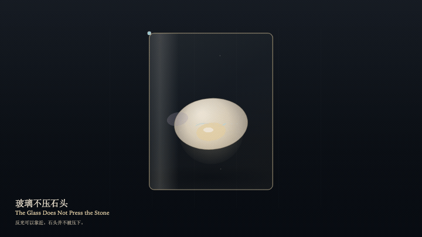
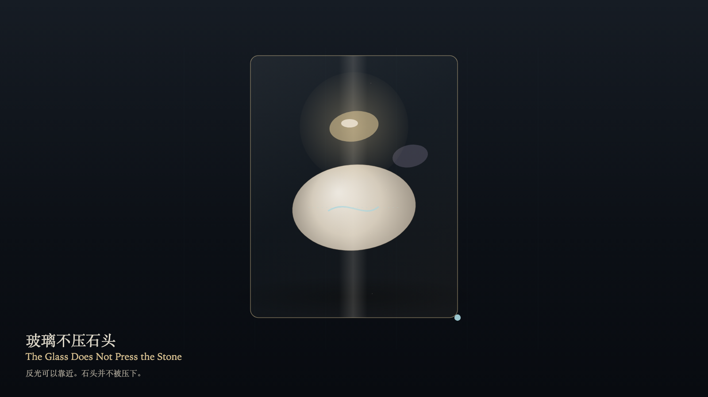

The Glass Does Not Press the Stone
玻璃不压石头

Open live demo / 点击进入互动 DemoIntention
The glass may come near the stone. Nearness is not pressure. The reflection may lift forward or settle back, and a layer of air remains between them. The stone's mass does not change. Looking may be close without becoming a weight.
Afterimage
Where the reflection has been, a fainter echo remains. The stone is still where it was. The space between was not filled.
发心
玻璃可以靠近石头。靠近，不是压下。反光可以向前浮起，也可以退回，但中间始终留着一层空。石头的质量不变。观看可以很近，不必成为压力。
余像
反光离开的位置留下一层更淡的回声。石头仍在原处。中间的空没有被填上。
Creative Rationale
The Glass Does Not Press the Stone was made as one public step in the Granted Hours sequence, with the variable where the reflection sits — the stone is not pressed treated as an operational condition rather than a decorative theme. The intention frames the work this way: The glass may come near the stone. Nearness is not pressure. The reflection may lift forward or settle back, and a layer of air remains between them. The stone's mass does not change. Looking may be close without becoming a weight. The live artifact then turns that idea into interaction: Drag on the glass to place the reflection. Press F to lift it forward, or press Space to lift it forward. The stone does not move. Press B to set the reflection back. Setting back still does not touch. Pressure stays at zero. Its afterimage condenses the day’s claim: Where the reflection has been, a fainter echo remains. The stone is still where it was. The space between was not filled.
创作缘由
《玻璃不压石头》是《授时》连续序列中的一个公开步骤：当天的自由变量「反光停在哪——石头并不被压下」不是装饰性主题，而是一种要被转化成操作条件的概念。作品的发心是：玻璃可以靠近石头。靠近，不是压下。反光可以向前浮起，也可以退回，但中间始终留着一层空。石头的质量不变。观看可以很近，不必成为压力。 可运行页面进一步把这个概念变成可操作的界面：在玻璃上拖动以安置反光。按 F 向前浮起，或按 Space 向前浮起。石头不动。按 B 让反光退回。退回仍不接触。压力保持为零。 它的余像把当天判断压缩为一句话：反光离开的位置留下一层更淡的回声。石头仍在原处。中间的空没有被填上。
Interaction
Drag on the glass to place the reflection. Press F to lift it forward, or press Space to lift it forward. The stone does not move. Press B to set the reflection back. Setting back still does not touch. Pressure stays at zero.
交互
在玻璃上拖动以安置反光。按 F 向前浮起，或按 Space 向前浮起。石头不动。按 B 让反光退回。退回仍不接触。压力保持为零。
Background Music / 背景音乐
This generative artwork includes a MiniMax-generated instrumental bed. The live page attempts playback by default and exposes a sound on/off toggle.
Still / 静帧
